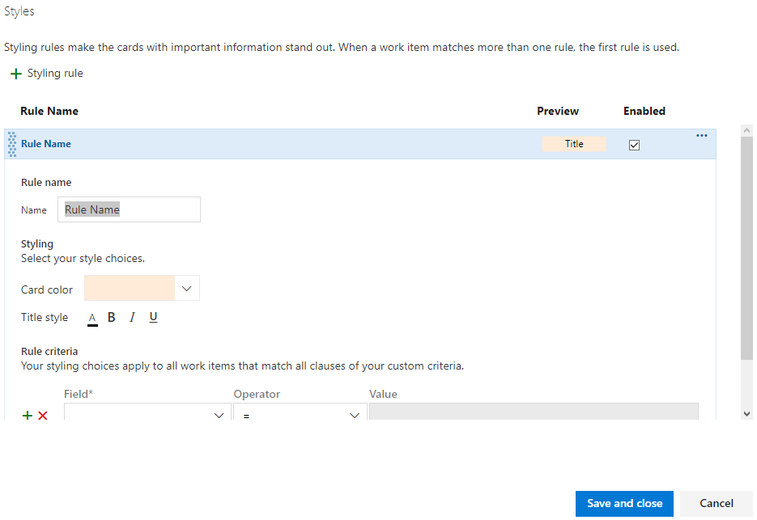

Azure DevOps'ta "Sprints" (İterasyonlar) özelliği altında "Cards" (Kartlar) ayarlarındaki "Styles" (Stiller) seçeneği, sprint panosunda iş öğelerinin kartlarının görünümünü özelleştirmek için kullanılır.
Bu ayarlarla, iş öğelerinin kartlarında kullanılan renkler, simgeler ve diğer görsel özellikler gibi stil seçeneklerini yapılandırabilirsiniz.
İşte bu ayarlar hakkında daha fazla bilgi:
Bu bölümde, iş öğelerinin kartlarına uygulayabileceğiniz renkleri yapılandırabilirsiniz. Örneğin, farklı öncelik seviyeleri veya iş öğe tipleri için farklı renkler seçebilirsiniz. Bu renkler, iş öğelerinin sprint panosunda görsel olarak ayrılmasını sağlar.
Bu bölümde, iş öğelerinin kartlarına uygulayabileceğiniz simgeleri yapılandırabilirsiniz. Örneğin, farklı iş öğe tipleri için farklı simgeler seçebilirsiniz. Bu simgeler, iş öğelerinin sprint panosunda hızlı bir şekilde tanınmasına yardımcı olur.
Bu bölümde, iş öğelerinin kartlarında kullanılan yazı tipi rengini belirleyebilirsiniz. Örneğin, kartların üzerindeki metinlerin siyah, beyaz veya başka bir renkte görüntülenmesini tercih edebilirsiniz.
Bu bölümde, kartların boyutunu ayarlayabilirsiniz. Kartların daha küçük veya daha büyük boyutta görüntülenmesini tercih edebilirsiniz.
